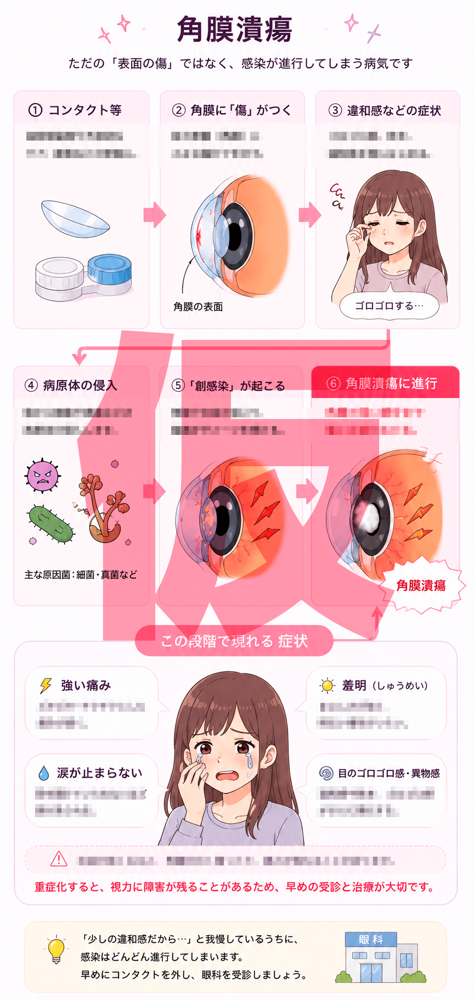

ただの傷じゃなくて、
感染が進んでいた
夢乃の「ゴロゴロする」から「目が開かない」までに、目の表面では何が起きていたのかをざっくり見るページやで。
角膜潰瘍痛み羞明早期受診

ポイントは、最初の違和感が「ただの乾き」だけではなく、傷や感染の始まりだった可能性があること。
夢乃の症状とつながるところ
ゴロゴロする
目の表面に傷や異物感が出ていたサインかもしれない。
目の表面に傷や異物感が出ていたサインかもしれない。
強い痛み・涙が止まらない
角膜は刺激に敏感。傷や感染が進むと、強い痛みや涙につながる。
角膜は刺激に敏感。傷や感染が進むと、強い痛みや涙につながる。
まぶしい
光がつらい状態は、目のトラブルで大事な受診サインになることがある。
光がつらい状態は、目のトラブルで大事な受診サインになることがある。
ここで覚えることは1つ
コンタクトをつけていて「痛い」「まぶしい」「涙が止まらない」と感じたら、まず外す。そして早めに眼科へ。市販の目薬でごまかす場面ではないかもしれない。
治療は何をするの？
状態に応じて、原因に合った点眼薬などで治療する。自己判断でコンタクトを再開したり、残っている目薬を使い回したりするのは危険やで。
※実際の診断・治療は眼科医の判断によるため、目の痛みや見え方の異常があるときは眼科で相談。